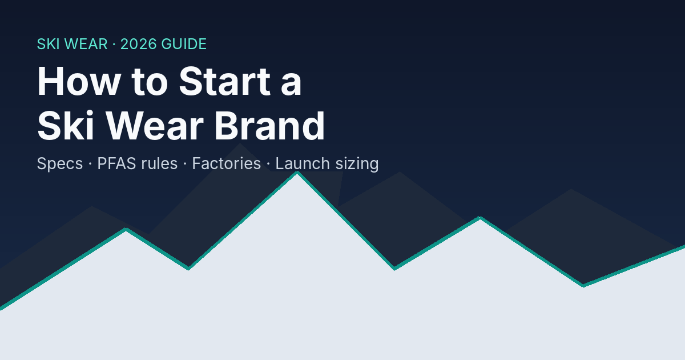

Ski Wear
How to Start a Ski Wear Brand: A 2026 Step-by-Step Guide
Seven steps to launch a ski wear brand in 2026: pick a product lane, spec waterproofing, meet PFAS rules, choose a factory, test and size your first run.

Starting a ski wear brand is mostly a manufacturing and compliance problem, not a design problem. A ski jacket has to keep someone dry and warm through a full day on a chairlift, and in 2026 it also has to clear PFAS rules that changed how waterproof gear is made. This guide walks you through the seven decisions that matter, in the order you need to make them: what to make first, how to spec it, which chemical rules apply, how to pick a factory, how to test, when to order, and how big your first run should be.
The demand is there, but it is volatile. U.S. ski areas logged 61.6 million skier visits in 2024-25, the second-best season on record, then fell to 52.6 million in 2025-26, a drop of about 9 million visits (15%), as the West had a poor snow year (NSAA data via Colorado Sun, May 2026). A new brand has to plan for both kinds of winter.
Key Takeaways
- Start with one product lane. Hardshells need membrane lamination and seam taping, so they cost more to develop than fleece, softshells or base layers.
- Put numbers in your tech pack: waterproof rating in mm (ISO 811), breathability as RET (ISO 11092), seam-taping scope and insulation weight.
- Specify PFAS-free water repellency now. California and New York have banned PFAS in consumer apparel since January 1, 2025; their 2028 exemption covers only expert gear for extreme wet conditions. The EU's PFHxA limits for consumer clothing apply from October 10, 2026.
- Plan a first run you could sell through in a low-snow winter like 2025-26, when U.S. skier visits fell by about 9 million.
In this guide: Step 1: Pick a lane · Step 2: Write the spec · Step 3: PFAS rules · Step 4: Choose a factory · Step 5: Sample and test · Step 6: Plan the calendar · Step 7: Size the first run · Common mistakes · FAQ
Before You Begin
You will move faster if you have these in hand before contacting factories:
- A positioning sentence. Who skis in your gear, where, and what they pay today.
- Reference garments. Two or three jackets or pants you admire, bought and taken apart if possible.
- A budget for development. Sampling, lab tests and fit sessions are paid before any revenue arrives.
- A target sales channel. Direct-to-consumer, specialty retail or both. This sets your timeline (Step 6).
- Time: expect most of a year from first tech pack to goods in hand for a technical shell.
Step 1: Pick One Product Lane You Can Own
By the end of this step you should have a single product category and one sentence on why skiers will choose it.
Ski wear splits into lanes with very different manufacturing demands:
| Lane | What it takes to make | Typical starting risk |
|---|---|---|
| Hardshell jackets and pants | Laminated membrane fabric, fully taped seams, waterproof zips | Highest |
| Insulated jackets and bibs | Shell fabric plus down or synthetic fill, baffle or quilt design | High |
| Softshells and mid-layers | Stretch woven or bonded fleece, fewer sealed seams | Medium |
| Base layers | Knit merino or synthetic, flatlock seams | Lower |
| Après and lifestyle | Hoodies, crews, beanies, often printed or embroidered | Lowest |
Many brands enter through the lower-risk lanes and add technical shells once they have customers and cash flow. Others lead with a hero shell because that is what the category judges them on. Both work; what fails is trying to launch all five lanes at once with a small budget.
Participation data supports a careful choice. Snowsports Industries America's 2024-25 preview found total U.S. participants up 2.4%, while alpine skiing fell 1.8% and cross-country skiing rose 5.8% (SIA via Snow Industry News, June 2025). One season is not a trend, but a brand built for Nordic skiers would be entering a segment that grew in 2024-25 while alpine shrank. (SIA tracks alpine touring separately, so this figure does not describe touring.)
Verify: you can name your lane, your customer, and the two competitors they buy from now.
For what the most demanding lane involves in production, see this hardshell jacket manufacturing page.
Step 2: Write a Spec Sheet With Real Numbers
By the end of this step you should have a tech pack a factory can quote from without guessing.
"Waterproof and breathable" means nothing to a factory or a customer. Two lab measurements do:
- Waterproofing is measured as hydrostatic head under ISO 811: water pressure rises under a clamped fabric sample until drops break through, and the result is reported in millimeters of water column (Germes ISO 811 explainer).
- Breathability is measured as RET (resistance to evaporative heat transfer) under ISO 11092. Lower is more breathable (Decathlon test explainer).
Common industry shorthand for those numbers (T3 for waterproofing, Decathlon for RET):
| Measure | Rating | What it usually means for ski wear |
|---|---|---|
| Hydrostatic head | 10,000-20,000 mm | Solid resort protection in most conditions |
| Hydrostatic head | 20,000 mm and up | Backcountry and wet-snow regions |
| RET | Below 6 | Extremely breathable, suits touring |
| RET | 6-12 | Very breathable, suits active resort skiing |
| RET | 12-20 | Average; can feel clammy on climbs |
Fabric ratings are only half the story. A 20,000 mm fabric still leaks through an untaped seam. Your tech pack should also state:
- Seam-taping scope: fully taped, or "critically taped" (shoulders, hood, yoke only).
- Zips and closures: water-resistant zips or storm flaps over standard zips.
- Insulation: fill type and weight per panel, in grams per square meter for synthetics or fill power and weight for down.
- Ski-specific features: powder skirt, helmet-compatible hood, pass pocket, boot gaiters, reinforced kick patches.
- Measurement chart with tolerances, so every size run can be checked.
Verify: a factory can quote your tech pack without asking you what "waterproof" means. For what a full tech pack includes, see this tech pack and sample development page.
Step 3: Plan for PFAS Rules From Day One
By the end of this step you should know which chemical finishes you will accept and what paperwork you will demand from suppliers.
For decades, the durable water repellent (DWR) finish on ski jackets relied on PFAS ("forever chemicals"). The main bans are already in force, and more deadlines follow.
What the rules say:
- California (AB 1817) has banned "regulated PFAS" in most textiles since January 1, 2025. Regulated means intentionally added, or total organic fluorine of 100 ppm or more, falling to 50 ppm on January 1, 2027. Manufacturers must give distributors a certificate of compliance (Bureau Veritas summary). A narrow category, "outdoor apparel for severe wet conditions", is exempt until January 1, 2028 but must be labeled "Made with PFAS chemicals" (Venable). That category means extreme, extended-use gear such as outerwear for offshore fishing and sailing, whitewater kayaking and mountaineering (Taft Law).
- New York (ECL 37-0121) banned intentionally added PFAS in apparel from January 1, 2025, and extends the ban to outdoor apparel for severe wet conditions on January 1, 2028. Its guidance describes that category as extreme, extended-use products, such as waterproof rather than water-resistant items; being waterproof is necessary but not sufficient to qualify (NY DEC).
- The EU restricts PFHxA, a common short-chain PFAS, under Commission Regulation (EU) 2024/2462. Limits of 25 ppb for PFHxA and 1,000 ppb for related substances apply to clothing for the general public from October 10, 2026 (regulation text on EUR-Lex; UL Solutions summary). A much broader EU-wide PFAS restriction is still in committee, with a final ECHA opinion expected by the end of 2026 (European Outdoor Group).
The practical reading: do not plan around the 2028 date. A resort ski jacket sold to the general public is unlikely to count as expert severe-wet gear, so treat your line as covered by the bans already in force, and get a compliance lawyer's view before relying on the exemption for any style. Building on a PFAS-free DWR from the first sample also keeps one product sellable in California, New York and the EU.
What to do:
- Write "no intentionally added PFAS" into your fabric and trim specs, including membranes, zips and seam tape.
- Ask mills for a supplier declaration plus a total organic fluorine test report from an accredited lab.
- Test water repellency after washing, because PFAS-free DWR finishes behave differently and customers will notice.
Verify: every material on your bill of materials has a PFAS declaration on file.
Step 4: Choose a Factory That Has Built Your Lane Before
By the end of this step you should have two or three factories quoting the same tech pack.
Ski wear factories differ more than most apparel factories. A plant that sews excellent hoodies may have no seam-taping machines. Ask each candidate:
- Which constructions have you produced? 2.5-layer, 3-layer, insulated, bibs. Ask to see a production sample, not a showroom sample.
- Is seam taping done in-house? Subcontracted taping adds transport, delay and a second quality system.
- What are your minimums? MOQs are usually per style, per colorway. Fabric mills can set their own minimums per color, so a 300-piece order can still trigger a larger fabric buy.
- How many sample rounds are included, and what does each extra round cost and take?
- Which test reports will you supply? Hydrostatic head, RET and PFAS testing from an independent lab.
- What are written lead times for each stage: fabric, sampling, bulk and shipping?
Ask for itemized quotes so you can compare factories line by line. The biggest cost drivers in ski wear are usually:
- Fabric: laminated membranes and custom colors cost more and can carry their own mill minimums.
- Construction: fully taped seams, waterproof zips and articulated patterns add labor time.
- Sampling: each extra sample round adds fees and weeks.
- Testing: every lab method (hydrostatic head, RET, PFAS screening) is billed separately.
- Order size: small runs spread setup costs over fewer units.
Branding needs its own check. Logos on technical fabrics behave differently than on cotton: heat from curing or heat transfers can damage coatings and membranes, and DWR finishes resist ink adhesion. Ask for wash and adhesion tests on the actual production fabric before approving a print or embroidery method. Embroidery also punches holes in a waterproof layer, so it belongs on panels without a membrane or needs backing tape.
Plan for customs too. In the U.S. tariff schedule, ski-suits have their own subheading (HTS 6211.20), while ski jackets and pants sold as separates generally fall under the outerwear and trouser headings (6201-6204). Duty rates vary with fiber content, construction and whether the garment is water resistant. Check the official USITC Harmonized Tariff Schedule and get a customs broker's classification before you set retail prices.
Verify: you have comparable quotes and can explain why the cheapest one is cheap.
Step 5: Sample, Then Test in the Lab and on Snow
By the end of this step you should have an approved sample and the test reports to back up every claim on your hangtag.
- Proto sample. Check construction and features. Expect changes.
- Fit sample. Fit on real bodies in ski boots and with a helmet, in at least two sizes.
- Lab tests. Send fabric and finished-seam samples to an independent lab for hydrostatic head, RET and PFAS screening.
- Field test. Put samples on skiers for full days, including lift rides in wet snow. Collect written notes on leaks, cold spots and pocket placement.
- Pre-production sample. The last sample, in production fabric and trims. Sign it and keep it; it is the standard bulk is judged against.
Do not print a waterproof rating on a hangtag that you have not tested. Claims are easy to make and expensive to defend.
Verify: your hangtag claims match your lab reports line by line.
Step 6: Work Backward From Your Selling Season
By the end of this step you should have a dated calendar with a buffer.
Ski wear sells in a narrow window. Retail buyers typically commit to fall product well before the snow, and direct-to-consumer brands need stock in hand before the first cold snap drives searches. Build your calendar backward from the date goods must be in your warehouse:
- In-warehouse date. Set it before your selling season starts, not when it starts.
- Ocean or air freight. Ask your forwarder for door-to-door transit, then add customs time.
- Bulk production. Use the factory's written lead time.
- Pre-production approval. Allow time to ship samples both ways.
- Sampling and testing. Add the rounds from Step 5.
- Fabric development. Custom colors and PFAS-free finishes can add weeks.
If you plan to sell wholesale, ask target retailers for their buying calendar early. Their order deadline, not your launch date, is your real start line.
Verify: every stage has a date, an owner and a buffer.
Step 7: Size Your First Run for a Bad Winter
By the end of this step you should have a first-order quantity you can sell through even if the snow does not come.
The 2025-26 season shows why this matters. Snowfall at U.S. ski areas averaged 112 inches against a ten-year average of 169, and total visits ranked 32nd of 48 seasons on record. Good snow in the East softened the blow: Northeast visits rose from 12.5 million to 12.9 million while Western resorts struggled (NSAA data via Colorado Sun). One season earlier, the industry posted its second-best year ever (SGB Media, which reported the preliminary 61.5 million).
For a new brand, that swing argues for three habits:
- Order the minimum on your riskiest styles and reorder if they sell, rather than buying deep up front.
- Favor colors and pieces that sell beyond powder days, such as mid-layers and insulated pieces that also work around town.
- Spread your customers across regions so one region's bad snow year does not sink the season.
Preorders help too. Taking deposits before you place bulk turns your forecast into evidence.
Verify: you can explain how you would clear your stock if next winter looks like 2025-26.
Common Mistakes to Avoid
Launching too many styles. Each style and colorway carries its own minimums and sampling costs. Five well-made styles beat fifteen thin ones.
Assuming the 2028 exemption covers you. It is written for expert gear in extreme wet conditions, not everyday resort jackets. Spec PFAS-free from the first sample.
Skipping lab tests. A hangtag that says 20,000 mm without a report behind it is a liability, not a feature.
Printing like it is cotton. Inks and cure settings that work on hoodies can crack or peel on softshells and coated fabrics. Test on the production fabric.
Planning to the snow forecast. Plan inventory for a bad winter and treat a good one as upside.
What Success Looks Like
If you have followed these steps, you now have a single product lane, a tech pack with measurable specs, PFAS declarations for every material, comparable factory quotes, tested and approved samples, a dated calendar and a first order sized for a weak winter. Your next stretch goal is a second lane: base layers and mid-layers are a natural add-on because they sell to the same skier and share your size chart. This base layer manufacturing page covers thermal, compression and merino options.
Frequently Asked Questions
How long does it take to launch a ski wear brand?
Plan on most of a year for a technical shell, from first tech pack to goods in your warehouse. Sampling rounds, lab tests and fabric development take most of that time. Base layers and lifestyle pieces can move faster because they need fewer specialized steps.
Do I need a 3-layer jacket to be taken seriously?
No. 3-layer laminates are the most durable construction and suit backcountry use, but 2.5-layer and insulated designs serve resort skiers well. Match the construction to your customer and state the measured ratings honestly.
Can I put my logo on a waterproof jacket?
Yes, but choose the method with the fabric in mind. Heat and needle holes can compromise a membrane, so test any print, transfer or embroidery on the production fabric and keep decoration off critical waterproof panels where possible. This screen printing page explains why waterproof shells, fleece and cotton each need a different ink system and cure.
About This Guide
This guide was written by the editorial team at a Sialkot apparel manufacturer that produces ski and outdoor wear for brands. Every statistic and regulation cited was checked against its source on October 6, 2026. It is general guidance, not legal advice: confirm PFAS and customs questions with a compliance lawyer and a licensed customs broker. Questions or corrections are welcome through the contact page; learn more about the team.
Ready to Turn Your Tech Pack Into Samples?
A ski wear brand is built one decision at a time: one lane, one honest spec, one compliant fabric, one well-sized first run. If you are ready to quote, BlackForgeX manufactures ski jackets, pants and bibs to buyers' tech packs, with seam taping done in-house in Sialkot. Send your tech pack for a ski wear quote.
Planning branding details next? See this overview of labels, hangtags and packaging options.